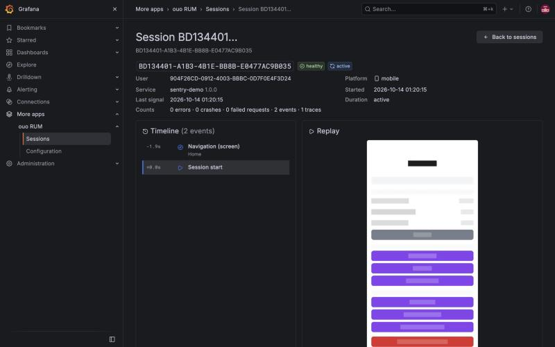
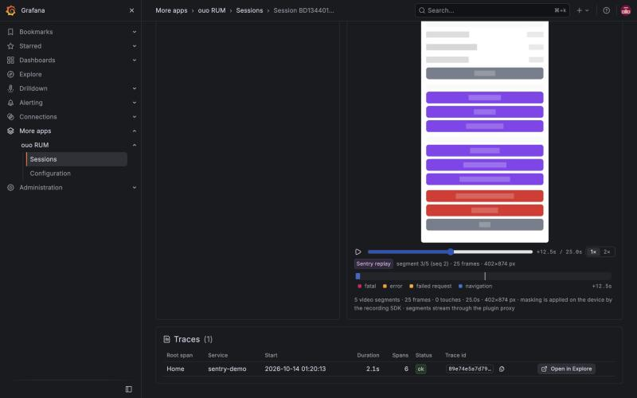
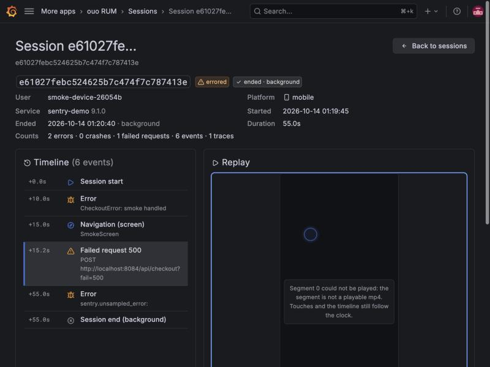
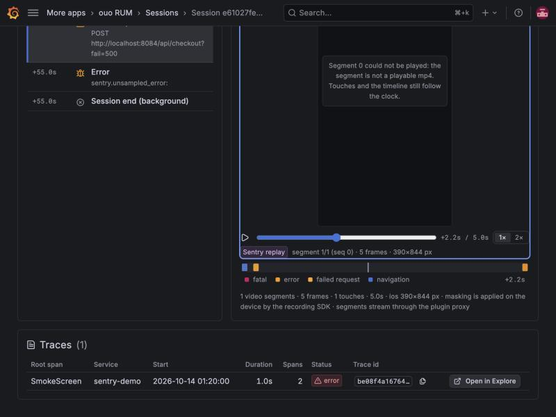
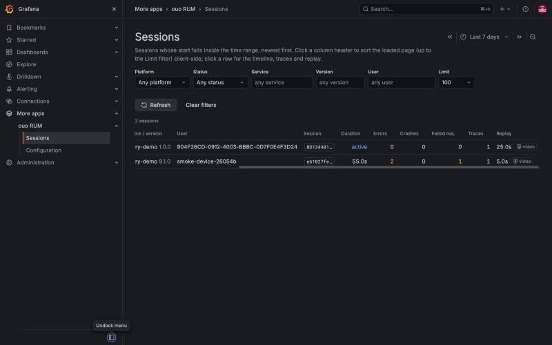

grafana-plugin, 2026-10-14. Plugin ouo-rum-app 0.4.0 loaded into the isolated ouo-sb Grafana 13.2.1 (http://localhost:3003), rum-api on :8091. Verified in the desktop app's built-in Chromium browser.
| Check | Result | How |
|---|---|---|
Player mounts for replay_kind: "video" | pass | Session BD134401… (sentry-demo, 5 real iOS segments, 25 s) and stub e61027fe… (1 segment) |
| Segments load through the plugin proxy | pass | <video src="/api/plugin-proxy/ouo-rum-app/rum/v1/sessions/<id>/replay/video/<seq>">; network log: manifest 200, seq 0 and seq 1 (preloaded) 206 |
Range / 206 through Grafana's proxy | passes through | Browser media requests answered 206; curl -r 100-199 gives 206, Content-Range: bytes 100-199/7728. No blob fallback needed. |
| Real Sentry segments decode | pass | readyState 4, 402×874, duration 5 for each mounted segment |
| Scrubber maps global time to (segment, offset) | pass | Click at 70%: 17.7 s → seq 3, currentTime 2.712; click at 50%: 12.5 s → seq 2 |
| Continuous playback across segments | pass | Play from 17.7 s: 19.2 s = seq 3 @ 4.23; 21.2 s = seq 4 @ 1.23 (preloaded element took over); stops at 25.0 s, seq 4 paused at 5.00 |
| Marker click seeks | pass | Navigation marker (−1.9 s, clamped) → 0 s; stub: "Failed request at +0.2s" → +0.2 s and the timeline highlights the failed request |
| Timeline entry click seeks | pass | "Session start" from 12.5 s → seq 0 @ 0.000 |
| Keyboard | pass | Two ArrowRight on the focused player: +0.2 s → +2.2 s (one 1 fps frame each) |
| Touch overlay | pass | Stub touch (100, 200) in 390×844 at +2.2 s: dot at 25.641% / 23.697%, centre 64.2, 127.9 px on a 248×538 stage (expected 63.7, 127.4), opacity 0.6 (200 ms into the 500 ms fade) |
| Undecodable segment | handled | Stub mp4 → MediaError 4, notice "Segment 0 could not be played…", clock, touches and markers keep working |
| "Sentry replay" badge | pass | Shown from source.vendor === "sentry"; tooltip carries replay_id |
| Sessions table | pass | Replay column shows "25.0s video" and "5.0s video" |
| Console errors | none | read_console_messages(onlyErrors) |
| Gap between segments (last frame) | unit tests only | The live sessions have contiguous segments; gaps are covered by VideoPlayer.test.tsx and video.test.ts |





video kind.HTTP/1.1 206 Partial Content Accept-Ranges: bytes Cache-Control: no-store (Grafana replaces rum-api's "private, no-cache") Content-Length: 100 Content-Range: bytes 100-199/7728 Content-Security-Policy: sandbox (added by Grafana; does not affect media playback) Content-Type: video/mp4 Etag: "..." Via: 1.1 grafana X-Ouo-Replay-Kind: video
npm run -w plugins/ouo-rum-app typecheck clean; lint 0 errors (3 pre-existing Select deprecation warnings); test 12 suites, 97 tests pass (new: video.test.ts, VideoPlayer.test.tsx, video cases in renderer, summary and sessions table tests); build webpack compiled successfully, dist/plugin.json version 0.4.0.